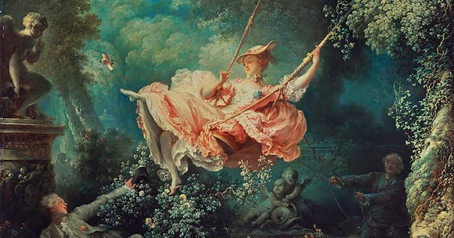
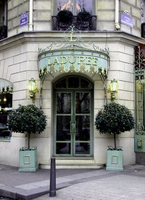

El Rococó es un estilo que nació del cansancio hacia la rigidez del reinado de Luis XIV el Rococó (que surgió en Francia a principios del siglo XVII) Es fascinante observar cómo el Rococó no se quedó atrapado en el siglo XVIII, sino que sigue vivo en la moda de alta costura, el diseño de interiores moderno y hasta en la estética visual del cine contemporáneo. A diferencia del Barroco, que usaba colores oscuros y sombras dramáticas, el Rococó es luminoso y suave.

Aunque el Rococó fue reemplazado por la sobriedad del Neoclasicismo, su espíritu de fantasía y ornamentación nunca desapareció realmente. Hoy en día, vemos su influencia en lo que llamamos "Neo-Rococó", una tendencia que rescata la elegancia juguetona para romper con el minimalismo moderno.
En la moda contemporánea, diseñadores de renombre mundial han reinterpretado los corsés, los encajes y los tonos pastel en sus pasarelas, demostrando que la sofisticación francesa sigue siendo un referente de lujo. El cine también ha sido un gran difusor, con películas que utilizan esta estética para crear mundos visualmente embriagadores.
